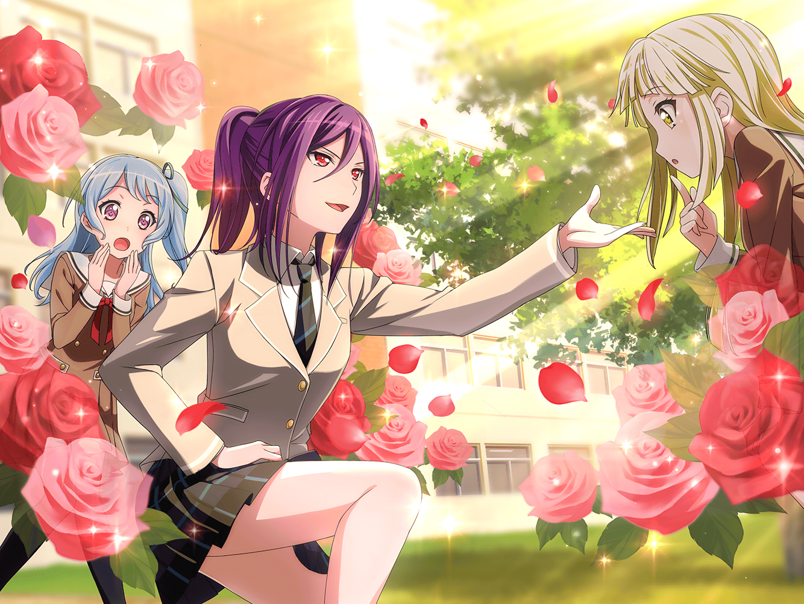

翌日
花咲川女子学園 2-A教室
花音
（昨日はすごいことに巻き込まれちゃった。
メンバーは見つからなかったけど……）
花音のクラスの友達
かーのんっ。お昼行こっ。
今日の限定メニュー、やばいらしいよー
花音
うん……。あっ

花咲川女子学園 廊下
こころ
ねえあなた！
あたしと一緒に、世界を笑顔に……
生徒
あっ、ご、ごめん弦巻さんっ。
私今から、お昼食べに行くからっ
花音のクラスの友達
あっ、出た。弦巻こころ。
上級生の教室にも平気で入ってくるってうわさ、
本当だったんだ
花音
（『世界を笑顔に』……たしかこの前も、言ってた……）
花音
あの子、有名な子……なの？
花音のクラスの友達２
まー結構ね。
それよりさっ、今日の合同演劇発表会行く？
花音のクラスの友達１
行く行く～！
こんなビッグイベント、逃せないって！
なんてったって相手はあの……
こころ
あっ！ 花音じゃない！！
２年生だったのねっ！
花音のクラスの友達１・２
知り合い！？
こころ
花音がいるなら話が早いわ！
今日のお昼はとっても楽しくなりそうっ。
もっともっと、バンドについて教えてほしいのっ
花音
え、わ、わ、私……っ

花音
（ど、どうしよう。こころちゃんに引っ張られて
一緒にお昼することに……
置いてきちゃった友達、怒ってないかな……）
こころ
ギターと言えば、バンドの華っ！！
……って、昨日読んだ本に書いてあったわ。
だからあたし、すっごく目立つ人を入れたいの
花音
め、目立つ人……ですか
こころ
そう。目立って、すっごい注目されて、
有名人で、バンドの顔！
になりそうな人、花音は知らない？
花音
う、うーん
生徒
演劇発表会、やっと来たね～！
このポスターの瀬田薫、写真で見てもかっこいい～っ
どこから見ても王子様っ、だよね
生徒
彼女のいる羽丘女子学園の体育館でやるんでしょ？
薫さまファンで、入りきらなそうで心配……
あたし授業終わったらもう、走って行く！
こころ・花音
瀬田……薫……
花音
演劇発表会……さっき友達が言ってました……
今日の放課後にある、
すごい……人気のイベントだって……
こころ
——うん。すごくいいっ。すごくいいわ！
花音、あたし決めた。
あの瀬田薫を、あたしのバンドのギターにする！
花音
ふぇっ！？ で、でも……
２人は会ったこと、あるんですか？
こころ
今から会うのよ！
花音とバンドしたとき、すっごい楽しかったじゃない？
だから薫も、きっと入ってくれると思うの！
花音
そ……そんな理由でっ？
こころ
ほかにどんな理由が要るの？
とりあえずこの、
演劇発表会っていうのを、見に行くわよ！
花音
（ええええ～～……っ）

羽丘女子学園 ホール
薫
ああ……風よ、吹け。
頬を吹き破らんばかりに吹け！
吹き荒れるだけ、吹け！
花音
（す、すごい……ほ、本物の王子様にしか、見えない……）
生徒
薫さま……！ ……はぁ……
こころ
すごいわね花音！ 彼女が喋るだけで、
ばたばた人が倒れていくわっ。
これがカリスマよっ！ 決定だわっ！

羽丘女子学園 校舎内
こころ
というわけで、やって来たわ！
花咲川女子学園の弦巻こころよっ。
演劇部の部室はどこかしら
生徒
は、はい……
花音
こ、こころちゃん、
まだ舞台が終わったばっかりだし
日を改めた方が……
こころ
あっ、あんなところにいたわっ！！
外に行っちゃいそうだわ！
ちょっと！ 待ってーーーっ！
花音
あぁ……っ
薫
……おや。
小さな挑戦者さん。この私に何か用かな？
花音
（ち、近くでみると、もっと、すごい！！
私と同じ、女の子……なんだよね？）
こころ
あなたの舞台を見たの！ すごいわね！
ステージを降りても、本当に王子様みたいだわ！
薫
ふふ。『みたい』ではなく、私は王子様だよ？
——この世は舞台、人はみな役者……
こころ
ねえあなた、ギターの経験はあるかしらっ
薫
……昔、ギタリストの役を演じたことがある。
今も少しは弾けるだろう……
演戯の目的とは、自然に向かって鏡を立て掛け……
こころ
じゃあ決まりね！！！
私、バンドをやってるの！ 入って！
花音
（こ、こころちゃん、薫さんの話、
まったく聞いてないよ……！
こ、これじゃ断られちゃうんじゃあ……）
薫
……ふふ、廊下は出入りが激しいから、ここだと落ち着かないな。
外でゆっくり話さないかい。
２人とも、着いておいで

薫
かのシェイクスピア曰く、ーー行動は雄弁である……
私は今まで、幾多のスカウトを受けてきた。
けれど……ふふっ。君のような強引なお姫様は、はじめてだ
こころ
そう？ バンドって、すっごく楽しいわよ！
音楽っていろんな曲にあわせて、色んなことをするのよ。
演技と似てないかしら？
こころ
バンドをやれば、きっといろんな役ができると思うの！
あなたがこのバンドで、どんな役をするのか、
考えてみて！ とってもワクワクしないっ？
薫
……なるほど。
私が必要なのはそういうことか……
薫
可憐な君たちを守る王子であり、
そして……この世界を彩る役者がほしいということか。
——わかった、入ろう
花音
（えっ。
……えっ！？
今の流れで薫さん、納得したの！？）
こころ
ありがとう！！ すごくうれしいわ！
薫
それではこの出会いを祝して、
私と世界についての詩を詠むから、聞いてくれたまえ
こころ
あたしはバンドで、これから何をするか考えるわね！
花音
（会話が成立してないのに、加入成立してる……！
こ、この人たち、どうなってるの……？）
こころ
花音はなにがしたい？
バンド結成記念だもの、派手に行くわよっ
花音
ちょ、ちょっと待って、
まだ結成できてないですっ。
バンドにはあと、ベースが必要ですよ～っ
薫・こころ
え？ そうなの（か）？